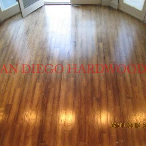
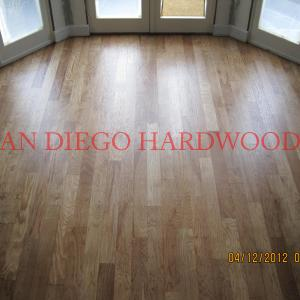
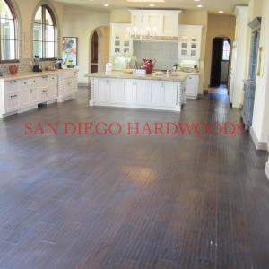
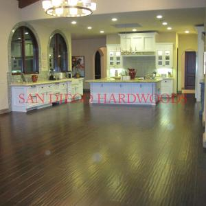
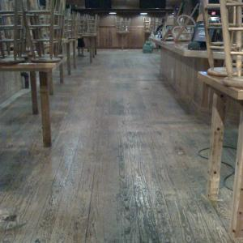
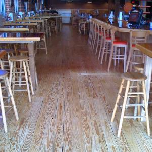
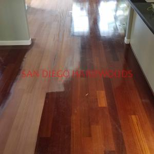
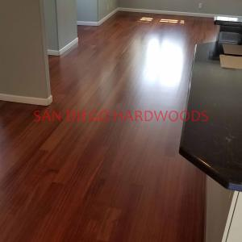
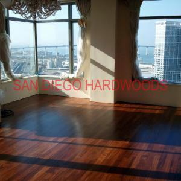
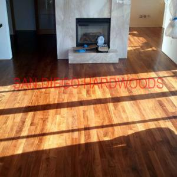

Hardwood Floor Deep Cleaning, Recoating & Bona Traffic HD Finish Upgrades in San Diego
Restore dull, worn floors without the cost, dust, or disruption of full sanding. Our professional Bona PowerScrubber system deep cleans, removes wax and polish buildup, and prepares hardwood floors for a durable maintenance recoat or premium finish upgrade—often completed in just one day. Call 858-699-0072, text floor photos or email sandiegohardwoods@gmail.com
Professional Deep Cleaning, Recoating & Finish Upgrades for Hardwood & Engineered Wood Floors
We professionally deep clean and restore hardwood, engineered wood, vinyl, laminate, bamboo, and cork floors throughout San Diego using commercial Bona PowerScrubber equipment and specialty cleaning solutions that remove embedded dirt, wax buildup, cloudy residue, cleaning product films, and contaminants that ordinary mopping cannot eliminate. Our process reaches deep into smooth, wire-brushed, hand-scraped, and textured flooring surfaces without sanding or creating dust. When appropriate, we complete the process with a professional maintenance recoat or upgrade older oil-finished hardwood floors to premium Bona Traffic HD water-based finishes for improved durability, easier maintenance, and long-lasting protection.
We proudly serve homeowners throughout San Diego County, including La Jolla, Del Mar, Solana Beach, Encinitas, Carmel Valley, Rancho Santa Fe, Point Loma, Coronado, Poway, Escondido, and surrounding communities. If your floors look dull, feel sticky, or have lost their original beauty, our deep cleaning and recoating system can often restore their appearance without the expense and disruption of full sanding.
Cleaning-Only Service
Not every floor needs a new coat of finish. When intensive cleaning is the appropriate scope, we provide deep cleaning as a stand-alone service — removing embedded dirt, old cleaner residue, and polish buildup so your existing finish looks and performs its best again.
Intensive Cleaning Before Recoating
A maintenance recoat only bonds well over a genuinely clean, compatible finish. We deep clean and prepare the floor first, confirm finish compatibility, and then apply a protective low-VOC maintenance coat — extending the life of the floor without full sanding.
Wire-Brushed, Textured & Oil-Finished Floors
Wire-brushed and textured floors trap dirt deep in the grain where mops can't reach, and oil-finished floors need manufacturer-approved care. We deep clean both safely — and where an oiled floor has become a maintenance burden, we can discuss converting suitable floors to a durable, easy-to-clean, low-sheen waterborne finish such as Bona Traffic HD.
See Our Hardwood Floor Deep Cleaning System in Action
Twenty real San Diego deep-cleaning and recoating projects, each shown before and after — from wire-brushed oak to commercial restaurant floors.
#1 Hardwood Floor Deep Cleaning with Bona Power Scrubber – San Diego Specialists


#2 Hardwood Floor Deep Cleaning in San Diego Homes – Dust-Free, Professional Service


#3 Hardwood Floor Deep Cleaning in San Diego Kitchens – Dust-Free, Professional Service


#4 Removing Polish and Wax Buildup from Engineered Wood Floors – San Diego Deep Cleaning & Recoating Prep


#5 Wire-Brushed Hardwood Floor Deep Cleaning – San Diego Home Prepping for Recoat


#6 Commercial Hardwood Floor Deep Cleaning in Del Mar – Engineered White Oak Restoration


#7 Del Mar Restaurant Hardwood Floor Deep Cleaning and Recoating – Commercial White Oak Revival


#8 Carlsbad Engineered Hardwood Floor Restoration – Deep Cleaning, Re-Staining, and Recoating


#9 Carlsbad Floor Restoration – Deep Cleaning, Wax Removal, Re-Staining & Recoating Process


#10 Golden Hill Douglas Fir floor refinishing with dust containment — in another late 1800s historic apartment near downtown San Diego, San Diego Hardwoods used an industrial belt sander connected to a Bona portable dust containment system to strip away paint and years of wear from vintage Douglas Fir planks; the floors were then stained in a rich Jacobian color and sealed with a satin commercial-grade finish, leaving a spotless, durable restoration that proves the effectiveness of true dust-free sanding


THIS IS 115 YEAR OLD DOUGLAS FIR FLOOR WAS COMPLETELY RESTORED WITH CUSTOM STAIN COLOR AND BONA TRAFFIC COMMERCIAL GRADE WATER-BASED POLYURETHANE IN GOLDEN HILL
#11 4S Ranch Brazilian cherry floor refinishing — this engineered cherry floor in North County San Diego, near Rancho Santa Fe and Carmel Mountain Ranch, was dust-contained sanded to remove its aluminum oxide coating, then sealed with a traditional oil-based sealer to deepen the rich cherry color and finished with a matte-sheen residential water-based coat; the result highlights the floor’s gorgeous detail, including custom cherry corner round, and restores decades of worn wood to like-new perfection


#12 Hillcrest restaurant French oak installation and finishing — wide-plank, seven-inch random-length engineered French oak was installed and sanded flat on site in this Baker’s Hill commercial space near South Park and Mission Valley; San Diego Hardwoods applied the same durable commercial finish and natural tone as in the first phase, creating a smooth, modern wide-plank floor built to withstand heavy use and showcase today’s most desirable style


#13 Rancho Santa Fe hickory floor refinishing — this engineered hickory floor, originally distressed and badly sun-faded, was dust-contained sanded flat to remove wear and texture; San Diego Hardwoods then custom-mixed a stain color to achieve the perfect tone and sealed it with Bona Traffic HD for a satin, durable finish, restoring the floor’s elegance and durability in this North County estate
{kind=link}

{kind=link}

#14 Carmel Valley wide-plank hickory floor restoration — in this gorgeous San Diego home near Del Mar, solid hickory planks had suffered extreme sun fading and wear; San Diego Hardwoods dust-contained sanded the surface to raw wood and applied a natural color sealer to highlight the rich grain and beauty of the wide-plank hickory, bringing the floor back to life with a timeless, durable finish


#15 Rancho Santa Fe hardwood floor deep cleaning and recoating — just outside Solana Beach, this North County home had wood floors coated in layers of old wax that left the surface dull and uneven; San Diego Hardwoods performed a full professional cleaning and wax removal, then applied a fresh commercial-grade finish to restore the natural beauty and durability of the floors, giving the home a clean, refreshed look without a full sanding
{kind=link}

{kind=link}

Bona Traffic HD satin finish applied for a durable, modern sheen in Rancho Santa Fe | Commercial-grade finish restores hardwood floors near Solana Beach without full sanding
#16 Downtown San Diego pine floor refinishing at Hooters — this solid pine floor in the Gaslamp District had taken years of heavy restaurant traffic and needed full restoration; San Diego Hardwoods dust-contained sanded the planks clean, then applied Bona Traffic HD, a two-part commercial polyurethane system in satin sheen, to deliver maximum durability and bring back the warm natural character of the pine, ensuring the floor can stand up to the demands of a busy downtown space
{kind=link}

{kind=link}

Gaslamp District restaurant pine floors sanded and coated with durable satin polyurethane
#17 Point Loma Brazilian cherry floor refinishing — this solid plank cherry floor in coastal San Diego was restored with dust-free sanding to remove years of wear; San Diego Hardwoods applied a clear sealer to highlight the deep, rich red tones, then finished with Bona Traffic HD, a two-part commercial polyurethane system, to deliver lasting protection and beauty; this project shows how Brazilian cherry can be refinished to perfection instead of replaced
{kind=link}

{kind=link}

#18 Scripps Ranch engineered white oak floor repair and recoating — in this San Diego home, San Diego Hardwoods carefully prepared the worn oak surface for proper adhesion, repairing problem areas before applying Bona Traffic HD in an extra-matte sheen; the commercial-grade polyurethane finish refreshed the natural beauty of the engineered white oak while delivering durable protection designed to last, proving that recoating is a smart solution to extend the life of quality hardwood floors without a full sanding


#19 Carmel Valley solid walnut floor recoating — this San Diego home’s walnut planks had suffered sun fading and surface wear; San Diego Hardwoods refreshed the floor by applying a custom color to even out tone, then sealed it with Bona Traffic HD, a commercial-grade polyurethane finish, restoring the deep natural walnut look with durable protection designed to handle years of use


#20 Gaslamp San Diego walnut floor refinishing — in this Omni Hotel condo overlooking the Coronado Bay Bridge, San Diego Hardwoods dust-contained sanded engineered walnut flooring back to raw wood, then applied Bona Traffic HD for a durable, modern finish; the result is a flawless walnut floor restoration in a high-rise setting, combining dust-free sanding with a commercial-grade polyurethane system designed for long-lasting beauty and protection
{kind=link}

{kind=link}

See Before & After Project Galleries → • Call 858-699-0072 • Text Floor Photos